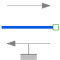

ConstantForceConstant force, not dependent on speed |

|
Information
This information is part of the Modelica Standard Library maintained by the Modelica Association.
Model of constant force, not dependent on velocity of flange.
Please note:
Positive force accelerates in positive direction of movement, but brakes in reverse direction of movement.
Negative force brakes in positive direction of movement, but accelerates in reverse direction of movement.
Parameters (2)
| useSupport |
Value: false Type: Boolean Description: = true, if support flange enabled, otherwise implicitly grounded |
|---|---|
| f_constant |
Value: Type: Force (N) Description: Nominal force (if negative, force is acting as load in positive direction of motion) |
Connectors (2)
Used in Examples (1)
|
Modelica.Blocks.Examples.NoiseExamples
Demonstrates how to model measurement noise in an actuator |
Used in Components (1)
|
Modelica.Mechanics.MultiBody.Joints
Prismatic joint (1 translational degree-of-freedom, 2 potential states, optional axis flange) |